Operating Documentation
Direction 5440000, Rev# 5
Signa HDxt Service Methods
Module Version 3.0, Version Date 11/6/09
Operating Documentation |
| Required Persons | Preliminary Reqs | Procedure | Finalization | |||
| 2 | Not Applicable | 2.5 hours | Not Applicable |
This procedure outlines how to replace an installed Tabletop Assembly.
| Item | Qty | Effectivity | Part Number | Manufacturer | ||||
| Allen Wrenches, 5/32”, 3/32”, 2 mm | 1 | - | - | - | ||||
| Flat Screwdriver | 1 | - | - | - | ||||
| Needle-Nosed Pliers | 1 | - | - | - |
| NOTE: | Ensure proper color component used based on the color of the table. |
| NOTE: | Order these parts from GPO for field replacement. |
Table 1: Tabletop Assembly FRU Kit Parts
| Part Number | Description |
| 5160616 | New Tabletop Assembly FRU Kit for Signa Infinity Table |
| 5305245 | New Tabletop Assembly FRU Kit for HDMR-2 Table |
| 46-317181P1 | Table Shims (as required) |
Illustration 1: New Tabletop Assembly
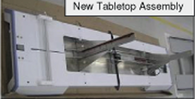
Illustration 2: Old Tabletop Assembly
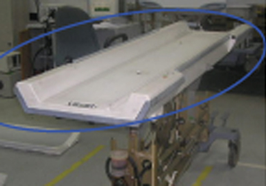
| ||||
| PERSONAL INJURY POSSIBILITY! | ||||
| SEVERE PERSONAL INJURY CAN OCCUR IF TABLE IS ACCIDENTALLY LOWERED DURING SERVICE ACTIVITY. | ||||
| WHEN PERFORMING MAINTENANCE OR REPLACEMENT OF PARTS ON THE TABLE, ENSURE THAT ALL FOUR CASTER WHEELS ARE LOCKED AND THE SAFETY LOCK BAR IS IN PLACE BEFORE SERVICING. DO NOT LOAD THE TABLE DURING MAINTENANCE. |
| ||||
| PERSONAL INJURY POSSIBLE ! | ||||
| TWO PERSONS ARE REQUIRED FOR LIFTING THE TABLETOP DURING REMOVAL AND INSTALLATION. |
Move the table out of the scan room and lock the caster wheels for service.
Illustration 3: Lock the Caster Wheels

Illustration 4: Table Before Arm Board Removal
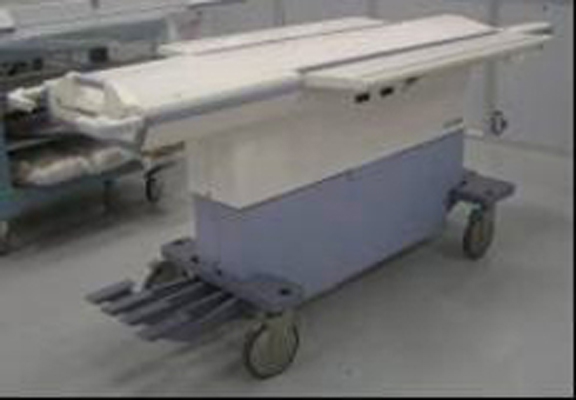
Loosen the grub screws on both sides of the arm board using 3/32 Allen key. See Illustration 5.
Illustration 5: Loosen the Grub Screws
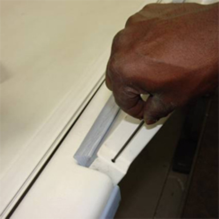
Push the grub screw using Allen key to move the arm board hinge out. See Illustration 6.
Illustration 6: Move Out the Arm Board Hinge
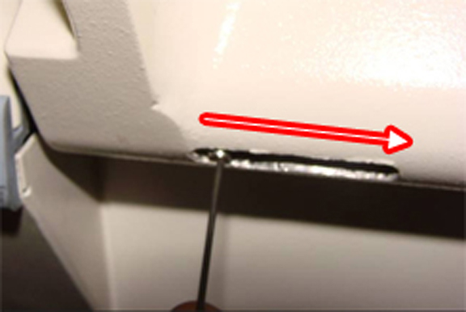
| ||||
| Possible Personal Injury! | ||||
| The arm boards may fall off if not held properly. | ||||
| Ensure that you hold the arm boards properly. |
Remove the arm boards. See Illustration 7.
Illustration 7: Remove the Arm Boards

Illustration 8: Table After Arm Board Removal
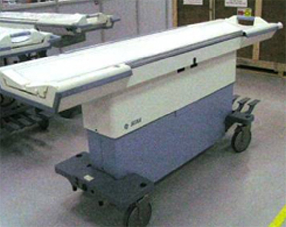
Remove latch support assembly from LH and RH sides.
Illustration 9: Remove Latch
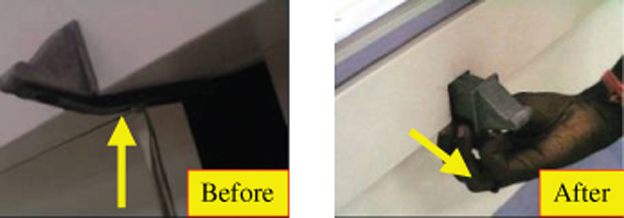
Remove outer and inner covers.
Illustration 10: Remove Covers
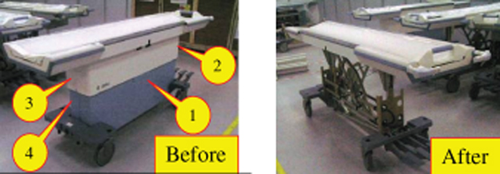
Remove latch support assembly from LH and RH sides.
Illustration 11: Remove Latch
Remove outer and inner covers.
Illustration 12: Remove Covers
| ||||
| AFTER REMOVING THE SCISSOR COVERS, ENSURE THAT SAFETY DELRIN BAR IS IN THE LOCKED POSITION. | ||||
Remove the spring of the safety Delrin bar from the scissor assembly (Illustration 13, left photo) and ensure that safety Delrin bar is positioned safely (Illustration 13, right photo).
Illustration 13: Remove Safety Bar Spring
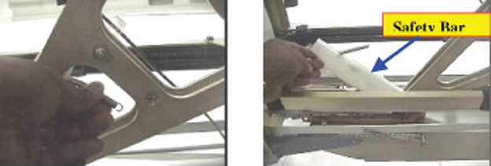
Press the Down pedal towards down position (Illustration 14, left photo), then release it to the up position (Illustration 14, right photo) so the Delrin safety bar is positioned safely.
Illustration 14: Safety Bar Placement
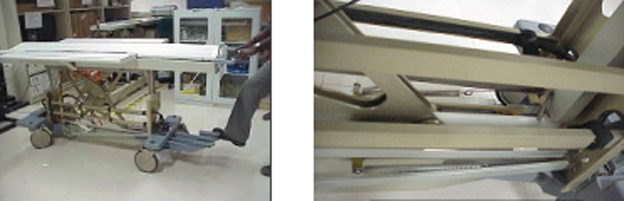
Press the cradle release pin and front Delrin stopper (Illustration 15, left photo). Pull out the cradle. The cradle will come out about 50 mm (Illustration 15, right photo).
Illustration 15: Cradle Release Pin
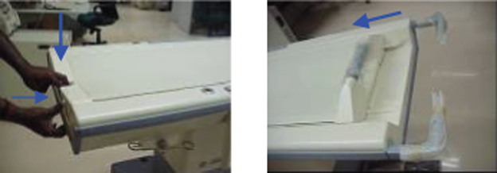
Press the bumper to release the central pin (Illustration 16, left photo) and pull out the cradle (Illustration 16 , right photo).
Illustration 16: Pull Out the Cradle
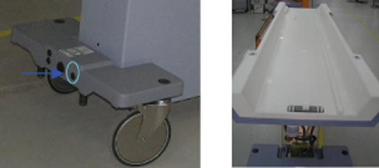
Remove the cap from the tabletop.
Illustration 17: Tabletop Cap Location
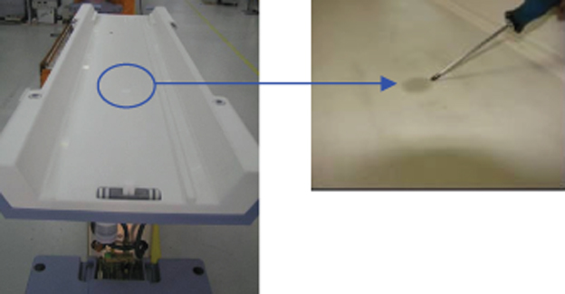
Remove the E-clip from hydraulic height adjustment screw (Illustration 18 , right photo).
Illustration 18: Remove Cap and E-Clip
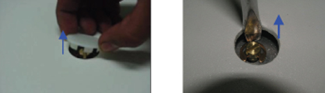
Remove the up-indicator wire holding assembly from tabletop and hydraulic cylinder shaft.
Illustration 19: Up-Indicator Wire Holding Assembly Location
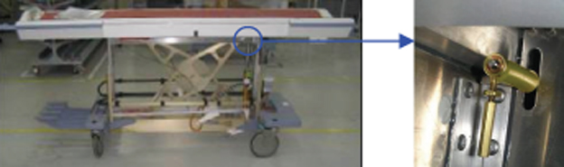
Remove the E-clip and the washer from the cylinder shaft on the other side of the tabletop.
Illustration 20: Remove E-Clip and Washer
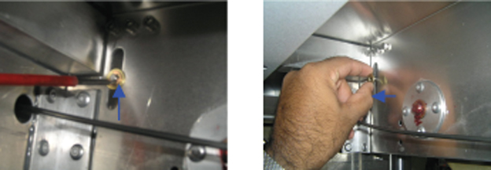
Pull the up-indicator wire holding assembly from the slot in the tabletop and place the whole assembly and parts on the casting safely until the new tabletop is assembled to table.
Illustration 21: Remove Up-Indicator Wire Holding Assembly
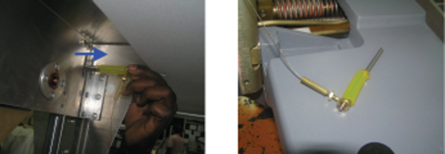
Unlock the inner wire of three cables (Flipper cable, Front Latch cable and the Center pin cable) and loosen the inner wires by loosening the grub screw.
Illustration 22: Cable Locations
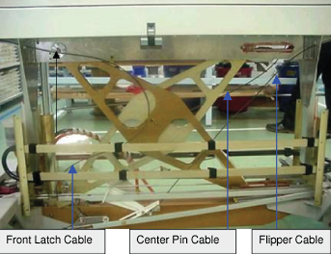
Illustration 23: Wire Locking Locations
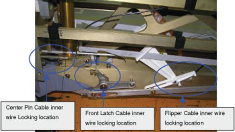
Unlocking and Removing Front Latch Inner Wire:
Loosen the grub screw using 2 mm Allen wrench and untie the knot.
Illustration 24: Removing Front Latch Inner Wire
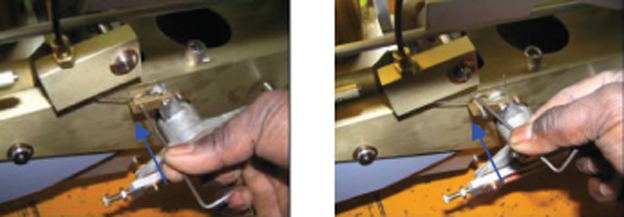
Remove the cable and inner wire from the dock lever as shown in Illustration 25.
Illustration 25: Remove Cable and Inner Wire
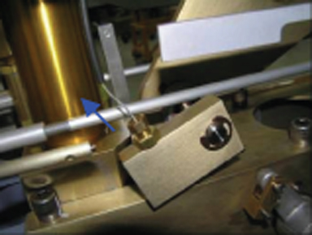
Unlocking and Removing Flipper Cable:
Unwind the wire and loosen the grub screw using 2 mm Allen wrench. See Illustration 26.
Illustration 26: Unwind Flipper Cable Wire
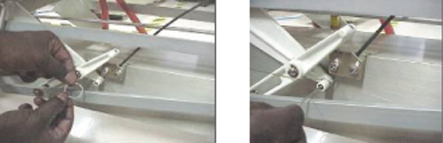
Remove the inner wire by using a long-nosed pliers to remove the double knot as shown in Illustration 27.
Illustration 27: Remove Inner Wire and Double Knot
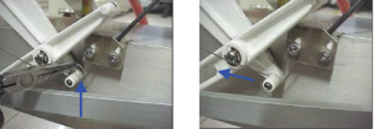
Pull out the Flipper cable sleeve along with inner wire as shown in Illustration 28.
Illustration 28: Pull Out Flipper Cable Sleeve
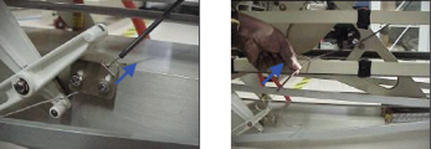
Unlocking and Removing Center Pin Cable:
Unwind the inner wire of the centre pin cable as shown in Illustration 29.
Illustration 29: Unwind Center Pin Cable Inner Wire
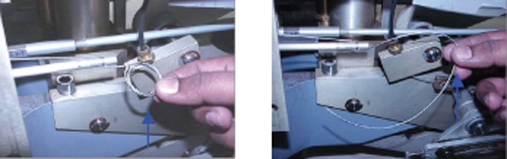
Loosen the grub screw and remove the double knot using Allen wrench. See Illustration 30.
Illustration 30: Remove Double Knot
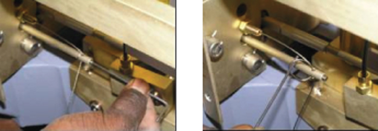
Pull out the center cable sleeve along with inner wire as from backside as shown in Illustration 31.
Illustration 31: Pull Out Center Cable Sleeve
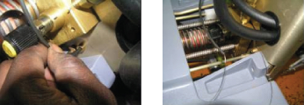
Illustration 32: Location of Scissors Assembly Interconnected to Tabletop Assembly
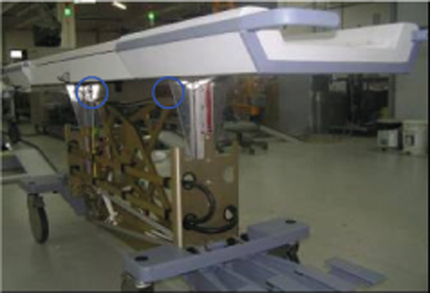
Removing Fixed Shaft Pin Assembly Connecting Scissor and Tabletop Assemblies:
Remove the E-clip and push the shaft pin toward the other side. See Illustration 33.
Illustration 33: Remove E-Clip from Fixed Shaft Pin
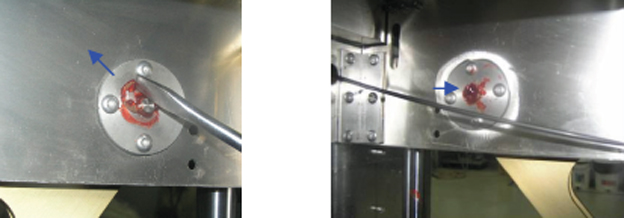
Hold the thick aluminium spacer and pull the shaft pin with the assembled E-clip on other side of tabletop assembly as shown in Illustration 34.
Illustration 34: Aluminum Spacer and Shaft Pin
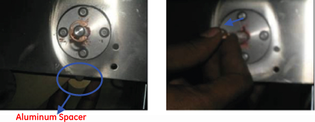
Removing Floating Shaft Pin Assembly Connecting Scissor and Tabletop Assemblies:
Remove the E-clip and nylon washer and push the shaft pin toward the other side. See Illustration 35.
Illustration 35: Remove E-Clip and Nylon Washer
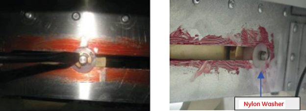
Catch the brass spacers and the nylon bushes.
Illustration 36: Catch Brass Spacers and Nylon Brushes
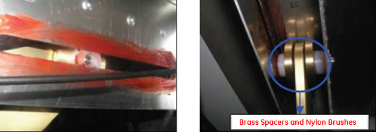
Pull the shaft pin with E-clip from other side and collect all the spacers.
Illustration 37: Pull Shaft Pin and Catch Spacers
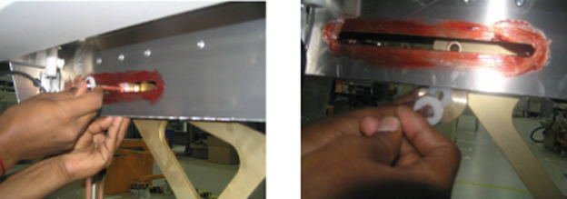
De-route all the cables from clamps and tie-ups in scissor assembly and base of table before removing the tabletop.
Illustration 38: De-Route Cables
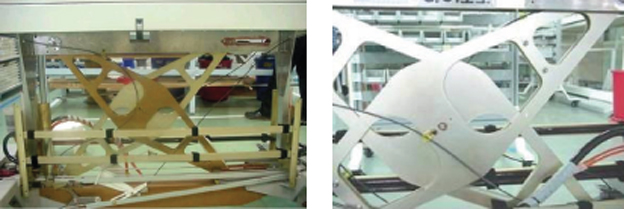
Lift the old tabletop and set it aside.
| ||||
| PERSONAL INJURY POSSIBLE ! | ||||
| TWO PERSONS ARE REQUIRED FOR LIFTING THE TABLETOP FROM TABLE STRUCTURE. |
| ||||
| Remove the tabletop without damaging the tabletop guiding surface and retain all the disassembled parts to reuse during New Tabletop assembly. | ||||
Check for sufficient amount of grease in the tabletop channels on each side of tabletop. If necessary, re-use grease from old table assembly.
Illustration 39: Tabletop Channel
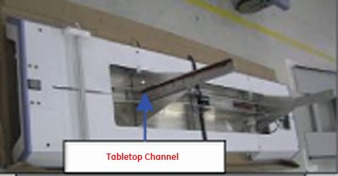
| ||||
| Ensure that safety Delrin bar is in the LOCKED position while assembling the Tabletop assembly to table. | ||||
Illustration 40: Safety Delrin Bar in Locked Position
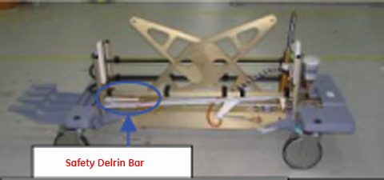
| ||||
| PERSONAL INJURY POSSIBLE ! | ||||
| TWO PERSONS ARE REQUIRED FOR LIFTING THE TABLETOP DURING INSTALLATION. |
Align the channel of the tabletop assembly to the Delrin bar of the front and rear plates on the table base assembly.
Illustration 41: Align Tabletop Channel to Delrin Bar of Front and Rear Plates
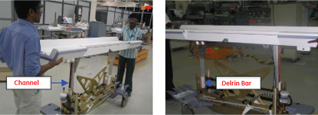
Slowly slide down the tabletop assembly onto the base assembly equally on the front and rear. During lowering of the tabletop to the base, ensure the hydraulic cylinder is positioned properly in the gap of the tabletop assembly.
Illustration 42: Lower Tabletop onto Base, Check Hydraulic Cylinder Position
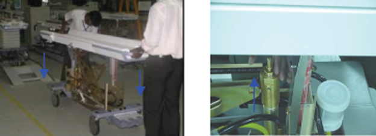
During lowering of the tabletop to the base, ensure the hydraulic cylinder rod is positioned properly in the hole of the tabletop, as shown, and slowly bring down the tabletop.
Illustration 43: Hydraulic Cylinder Rod Position
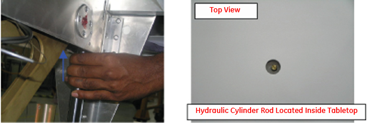
Assembling Fixed Shaft Pin Assembly Connecting Scissor and Tabletop Assemblies:
Align the tabletop to the scissor slot. Insert the thick aluminum spacer into the gap of the blades of the scissors assembly.
Illustration 44: Aluminum Spacer Inserted into Gap of Blades in Scissor Assembly
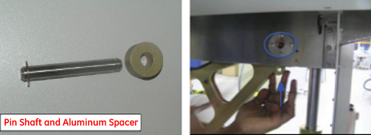
Apply grease onto the shaft pin and insert the pin into the tabletop slot, aluminum spacer, and scissor slot as shown in Illustration 45.
Illustration 45: Insert the Greased Shaft Pin
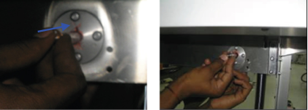
Lock the other side of the shaft with the E-clip and ensure proper seating of the E-clip.
Illustration 46: Lock the Shaft
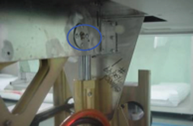
Assembling Floating Shaft Pin Assembly Connecting Scissor and Tabletop Assembly:
Fix the E-Clip to the shaft and insert a nylon washer onto the shaft. Apply grease to the shaft before insertion.
Illustration 47: Assemble and Grease the Floating Shaft Pin
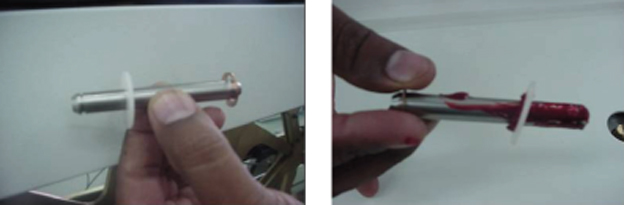
Align the tabletop to the scissor slot. Insert the brass spacer with nylon washer into the gap between the tabletop and blade of the scissors assembly.
Illustration 48: Insert Brass Spacer with Nylon Washer
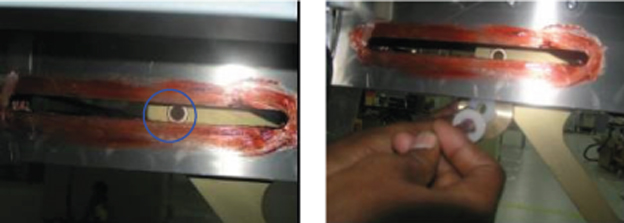
Insert the shaft pin with the E-clip and nylon washer through the slot on the tabletop. Place the thick nylon washer and brass spacer on the other side and pass the shaft through them.
Illustration 49: Insert Shaft Pin through Slot on Tabletop
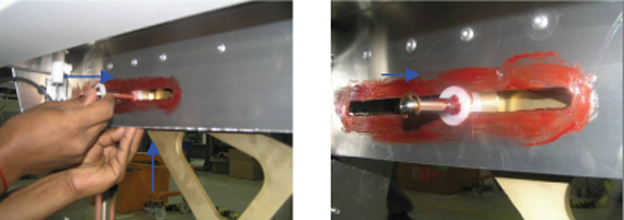
Pass the shaft through the scissors assembly, brass spacer, thick nylon washer and through the slot on the other side, in the order shown in Illustration 50.
Illustration 50: Pass Shaft through to Other Side
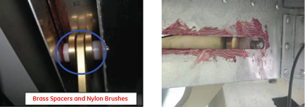
Insert a nylon washer through the shaft and then lock the shaft with an E-clip.
| NOTE: | Rotate the E-clip to ensure that it is positioned in the groove. |
Illustration 51: Pass Shaft through Scissor Assembly
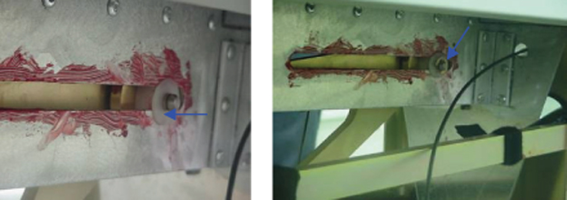
Take the up-indicator wire holding assembly and push the shaft pin in the tabletop slot and hydraulic cylinder shaft slot until the shaft pin projects through the other side of the tabletop assembly.
Illustration 52: Insert the Up-Indicator Wire Holding Assembly
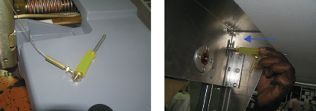
Check for the complete assembly of up-indicator wire holding assembly, in the order shown, and then insert the washer from the other side of the shaft to butt up against the tabletop.
Illustration 53: Check the Up-Indicator Wire Holding Assembly
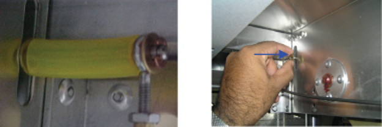
Insert the E-clip in to the groove of the shaft pin as shown in Illustration 54.
Illustration 54: Insert E-Clip into Shaft Pin Groove
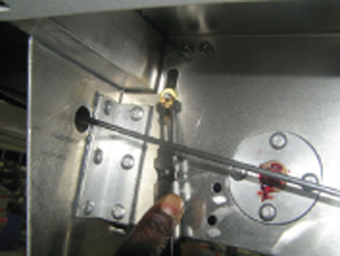
Assemble the E-clip to height adjustment screw rod as shown in Illustration 55.
Illustration 55: Hydraulic Height Adjustment Screw Rod with E-Clip
Reinstall the cap in the tabletop slot as shown in Illustration 56.
Illustration 56: Assemble Cap in Tabletop Slot
Installing and Adjusting Center Pin Cable Assembly:
Check for the freeness of the inner wire, and ensure the cable sleeve positioned as shown in Illustration 57.
Illustration 57: Inner Wire and Cable Sleeve Position
Route the cable from the cradle pin assembly through the clamp on the tabletop and scissor assembly. Pass the cable casing and the cable into the clamp on the scissors assembly and route it through the channel along with the hose assembly.
Illustration 58: Cable Routing - Left Side
Pull out the cable through the left side bushing of the front plate and insert it into the screw on the right side of the front plate as shown in Illustration 59.
Illustration 59: Cable Routing - Right Side
| NOTE: | Pull the cable (free end) five to six times to ensure cradle pin on tabletop end is made full stroke and let it hang freely. |
Thread the cable through the screw and into the hole of the push rod. Wind the cable once over the push rod and lock the cable with the set screw.
Illustration 60: Thread Cable through Push Rod
Double-knot the cable.
Illustration 61: Double-Knotted Cable
Pull the cable using the long-nosed pliers to make sure wire is not damaged and then tighten the grub screw.
| NOTE: | Make sure the wire is taut. |
Illustration 62: Pull Cable and Check Tension
Ensure the cable height pin is 4.5 + 0.25 mm.
Illustration 63: Check Cable Height
Repeat the process for five times to retain the height of the pin.
Knot the remaining inner wire.
Illustration 64: Knot the Inner Wire
When the table is docked (or press the bumper by 9.65 mm), the cradle lock pin should be minimum 3 mm inside at the top-most position of the table. Similarly, when the table is undocked the height of the cradle pin should be minimum 4.5 mm.
Illustration 65: Cradle Lock Pin Depth
| NOTE: | When the table is undocked the height of the cradle pin
should be minimum 4.5 mm. If not, fine-tune the adjusting screw using
10-11 spanner such that the cradle pin should be inside by 3 mm when
docked. Illustration 66: Fine-Tuning the Adjusting Screw |
Adjusting Front Guide Rollers Height:
Front guide rollers are to be at 0.25” above the cradle wheel tracks as shown in Illustration 67. In case of any variation, follow the next steps of the adjustment process.
Illustration 67: Front Guide Rollers
Check that O-rings are 0.25 inches above the wheel track using Carriage Release O-Ring projection from tabletop.
Disassembling the Latch Assembly Holding Blocks:
Loosen the set screw using 5/32 Allen wrench and remove the cover plate.
Illustration 68: Remove Cover Plate
Loosen the screw from holding block-1 using 5/32 Allen wrench and screwdriver as shown in Illustration 69, left photo.
Illustration 69: Loosen Holding Blocks
Remove the block 1 and block 2 as shown in Illustration 69, right photo.
Adding or Removing Shims:
Add or remove shims on the blocks to increase or decrease the height, until the o-rings are 0.25”(6.35 mm) above horizontal wheel track on each side as shown in Illustration 70.
Illustration 70: Shim Added to Block
Assembling the Latch Assembly Holding Blocks:
Tighten the screw of the holding blocks 1 and 2 as shown in Illustration 71 (left photo) and put back the cover plate (right photo).
Illustration 71: Assembling Holding Blocks
| ||||
| Ensure that when the cradle is locked the Delrin does not interrupt the locking. If the centralization of the carriage-release housing is not properly positioned, adjust the carriage-release housing by pushing it back and forth in between the slot of the cradle section as shown in Illustration 72. | ||||
Illustration 72: Front Delrin Latch
| NOTE: | The front latch height has to be readjusted after setting the height of the roller. To adjust, proceed to Adjusting the Front Latch Cable Assembly. |
Adjusting the Front Latch Cable Assembly:
Remove the knot of the cable sleeve and pass the inner wire with casing into the hole on the bottom side of the tabletop.
Illustration 73: Cable Routing - Right Side
Route the cable from the latch assembly through the clamp on the scissors assembly as shown in Illustration 74 (top photos).
Illustration 74: Cable Routing through Clamp on Scissors Assembly
Insert the free end of the inner wire to the link lever as shown in Illustration 74 (bottom photos).
Insert the free end of the inner wire through lever-casting link lever to make a double knot to provide preload.
Illustration 75: Wire through Lever-Casting Link Lever
Pull the free end of the wire five to six times to ensure front latch Delrin block is flush to the casting. Pull the cable using the long-nosed pliers to make sure the cable is taut (there should be no slackness in the inner wire) and tighten the grub screw using the Allen wrench.
Illustration 76: Check the Cable Tension
| NOTE: | Check for the slackness and effectiveness of stroke and make a double knot in the cable. |
Press with the Allen wrench to check the wire tension.
Illustration 77: Check the Wire Tension
Adjustment Procedure:
Press the Dock pedal to adjust the position of the front Delrin block of the latch assembly.
Illustration 78: Dock Pedal Adjustment
Use 10 mm rod to simulate the dock condition by inserting the 10 mm rod as shown when the dock pedal is in operated condition.
Illustration 79: Front Latch Delrin Block Position
Measure the latch height from casting top surface in dock condition and ensure Delrin latch block is butted against casting face or below casting face.
| NOTE: | Delrin block should butt with the casting in dock condition. |
Check that the front latch height is 23.5 + / -0.25 mm and check the hook arm is touching the tygon tube shaft in undock condition. If not, readjust the adjustment screw using 10 / 11 spanner to make the Delrin height to 23.5 mm and check for dock hook touching the tygon tube shaft.
Illustration 80: Front Latch Height
If it is not touching, readjust the front latch cable setting such that the Delrin is flush with the casting in dock condition and the dock hook is touching the shaft. Activate the pedals 2-3 times and recheck the position of the Delrin stopper.
Illustration 81: Dock Hook Touching Shaft
Adjusting the Flipper Dock / Undock Cable Assembly:
Check for the new flipper cable routing and the adjuster block orientation as shown.
Illustration 82: Flipper Dock / Undock Cable Assembly
Bring down the cable casing and inner wire as shown in Illustration 83without inserting into any of the clamps.
Illustration 83: Flipper Cable Routing
Insert the inner wire into the flipper actuating lever as shown and pull the wire to make cable sleeve butt against the lever.
Illustration 84: Insert Wire into Flipper Actuating Lever
New Cable Assembly Inner Wire Setting:
Insert the inner wire onto the plastic lever bottom as shown in Illustration 85.
Illustration 85: Insert Inner Wire into Plastic Lever Bottom
Again pass through the hole from bottom to get double knot mounting and pull the wire using the long-nosed pliers. Tighten the grub screw using Allen wrench by keeping the gap to 12~18 mm between the down lever bottom and cylinder pin as shown in Illustration 87.
| NOTE: | When the cradle is inside the magnet bore and not in Home position in the tabletop, a distance of 12 to 18 mm has to be maintained between the Down pedal lever and cylinder spring lever. |
Illustration 86: Create Double Knot and Tighten Grub Screw
Check the distance between the down lever and the spring lever on the cylinder. If the gap fails to fall between the 12~18 mm range, then follow the adjustment procedure.
Illustration 87: Gap Distance Between Down Lever and Spring Lever
Adjustment Procedure:
Check the distance between the down lever and the spring lever on the cylinder. If the gap fails to fall between the 12~18 mm range, then readjust the adjustment screw using 10 / 11 spanner
If the adjustment screw does not provide enough range for adjustment, coarse adjustment may be made to the cable length by following earlier procedure of pulling the inner wire through the flipper actuating lever and tightening the inner wire. Fine adjustment will be required after performing a coarse adjustment.
Illustration 88: Adjustment Procedure
The gap between the profile of the pulling down pedal lever and the cylinder spring lever should be 3 mm, while docking and undocking. If the gap is less, then adjust it by moving the plastic lever.
Illustration 89: Adjust the Plastic Lever
Final Checks:
Illustration 90: Final Checks
Put back the cradle onto the tabletop and slide the cradle to the locked position.
Illustration 91: Cradle in Locked Position
Adjust the Delrin stopper guides on the tabletop as shown in Illustration 92. Maintain minimum gap between the guides and the cradle section. Ensure the cradle moves freely between the guides. If there is play in the cradle between the guides, move the guides backward (toward handle side) until the play is arrested.
| NOTE: | Lock the cradle and move it back and forth between the
guides to check for zero play in the cradle. Illustration 92: Delrin Stopper Guide |
Return the Delrin safety bar to the locked position by locking the spring.
Illustration 93: Delrin Safety Bar in Locked Position
Return the safety bar to its unlocked position from locked position.
Ensure there is no slack in the up-indicator wire by adjusting the screw when the table reaches its uppermost position.
Illustration 94: Delrin Safety Bar in Unlocked Position
Take the table inside the MR Bay and dock the table and check for level difference between the table and the bridge at the cradle rolling surface by using MR compatible spirit level or level indicator. If level difference is found between the table and bridge after table reaching its upper most position, then follow the adjustment procedure.
Illustration 95: Dock and Level the Table
Remove the height adjustment screw rod cap. Use the screw available on the hydraulic cylinder rod to adjust the vertical height of the table with respect to the bridge by tightening or loosening the screw rod.
Illustration 96: Adjust Vertical Height
Checks to be carried out before reinstalling the outer and inner covers:
Docking and undocking of the table to be checked in MR bay.
Cradle in and out motion to be carried out and checked in MR bay.
If any adjustments required in the table, bring back the table outside MR bay and do the adjustments.
If no adjustments required, follow the steps for assembly.
Reinstall the outer and inner covers.
Illustration 97: Reinstall the Outer and Inner Covers
Reinstall the latch support assembly on both LH and RH sides of tabletop.
Illustration 98: Reinstall the Latch Support Assembly
Dispose of old tabletop assembly per local guidelines.